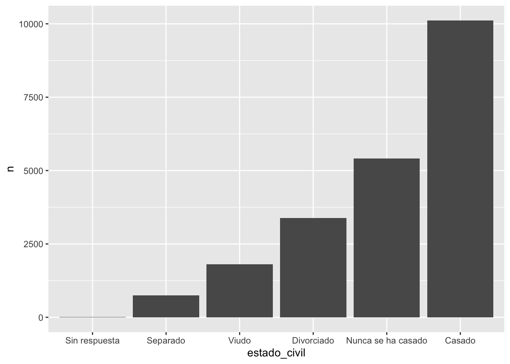
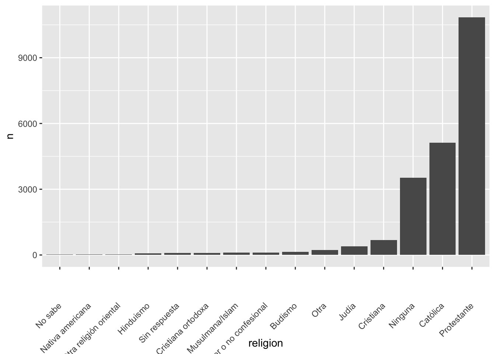
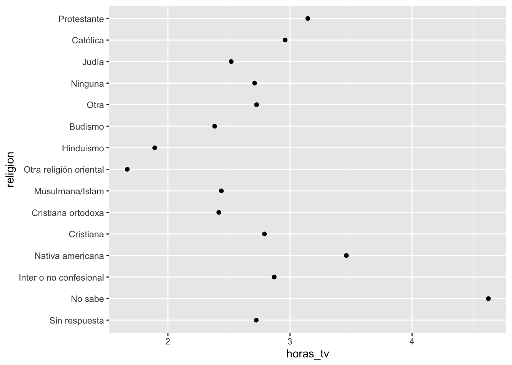
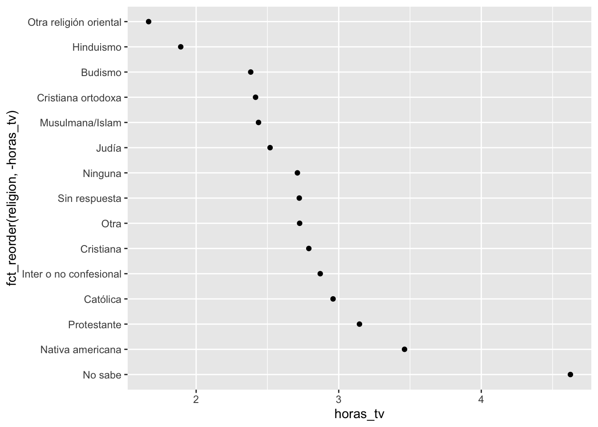
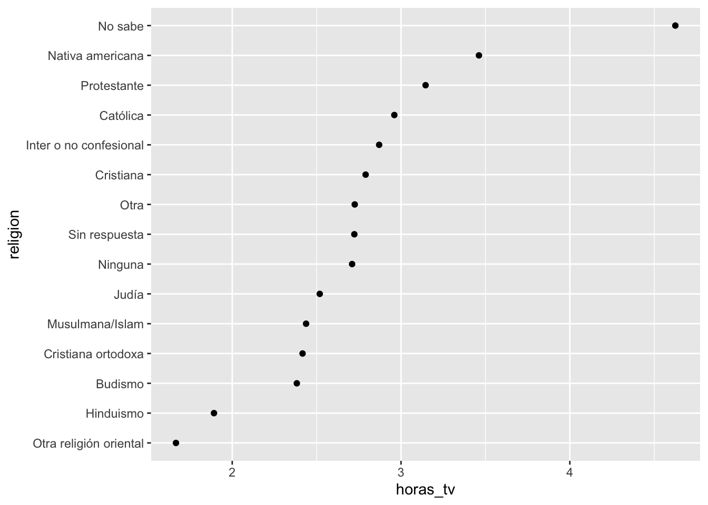
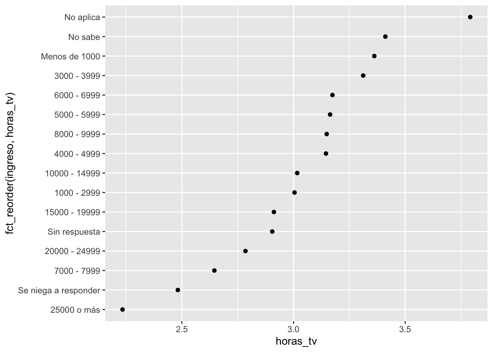
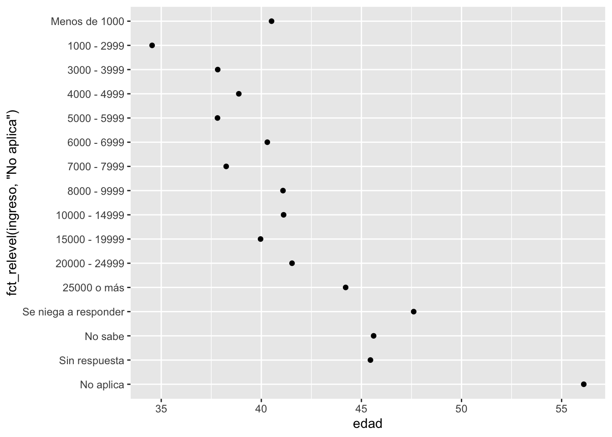

11_Factores
BIOL4026
Raymond L. Tremblay
Fecha de la ultima revisión
## [1] "2023-08-09"Titulo Grande
nbgf/lkshvdhgv’o
Titulo mediano
mhgcjl,fgfgj
Titulo pequeño
gfgjhk
Titulo mini
fgdhfjgk
titulo ??
fgcghgjhk
ggcjhglkjg
El tema proviene de los siguientes sitios.
English: https://r4ds.had.co.nz/factors.html
Español: https://es.r4ds.hadley.nz/factores.html
library(tidyverse)
library(datos)
library(forcats)x1 <- c("Dic", "Abr", "Ene", "Mar")x2 <- c("Dic", "Abr", "Eme", "Mar")sort(x1)## [1] "Abr" "Dic" "Ene" "Mar"niveles_meses <- c(
"Ene", "Feb", "Mar", "Abr", "May", "Jun",
"Jul", "Ago", "Sep", "Oct", "Nov", "Dic"
)
sort(niveles_meses)## [1] "Abr" "Ago" "Dic" "Ene" "Feb" "Jul" "Jun" "Mar" "May" "Nov" "Oct" "Sep"y1 <- factor(x1, levels = niveles_meses)
y1## [1] Dic Abr Ene Mar
## Levels: Ene Feb Mar Abr May Jun Jul Ago Sep Oct Nov Dicsort(y1)## [1] Ene Mar Abr Dic
## Levels: Ene Feb Mar Abr May Jun Jul Ago Sep Oct Nov Dicy2 <- factor(x2, levels = niveles_meses)
y2## [1] Dic Abr <NA> Mar
## Levels: Ene Feb Mar Abr May Jun Jul Ago Sep Oct Nov Dicy2 <- parse_factor(x2, levels = niveles_meses)
y2## [1] Dic Abr <NA> Mar
## attr(,"problems")
## # A tibble: 1 × 4
## row col expected actual
## <int> <int> <chr> <chr>
## 1 3 NA value in level set Eme
## Levels: Ene Feb Mar Abr May Jun Jul Ago Sep Oct Nov Dicfactor(x1)## [1] Dic Abr Ene Mar
## Levels: Abr Dic Ene Mary2 <- parse_factor(x2, levels = niveles_meses)f1 <- factor(x1, levels = unique(x1))
f1## [1] Dic Abr Ene Mar
## Levels: Dic Abr Ene Marf2 <- x1 %>% factor() %>% fct_inorder()
f2## [1] Dic Abr Ene Mar
## Levels: Dic Abr Ene Marlevels(f2)## [1] "Dic" "Abr" "Ene" "Mar"Temas:
library(forcats)
sort()
factor()
parse_factor()
unique()
fact_inorder()
levels()
A smaller figure to the right, with floating text

LOTS of text here to wrap around the figure. dfghjlkjhgdgxchvbvcxcvbnnbvvbvbbvcvxcv. fgffhgcvbcvbhbvvbvcvbnv bcbnbbnmmbnmnb vbcbnbvvnbbb vbb v b b cgjhkggbcv
Haga un re-order por la cantidad de personas por religion
df2=encuesta %>%
count(religion)
df2 %>%
mutate(religion = fct_reorder(religion, n)) %>%
ggplot(aes(x = religion, y = n)) +
geom_col()+
theme(axis.text.x = element_text(angle = 45, vjust = 0.5, hjust=1))
df2 %>%
mutate(religion = fct_reorder(religion, n)) %>%
ggplot(aes(x = religion, y = n)) +
geom_col()+
theme(axis.text.x = element_text(angle = 45, vjust = 0.5, hjust=1))
Hacer los ejercicios en la sección 15.3.1 del libro en español
Modificar el orden de los factores
- fct_reorder()
- !is.na( ) remover los “NA”
- fct_infreq()
- fct_rev()
- fct_recode()
- fct_collapse()
- fct_lump()
#model=lm(y~x, df)
#summary(model)
resumen_religion <- encuesta %>%
group_by(religion) %>%
summarise(
edad = mean(edad, na.rm = TRUE),
horas_tv = mean(horas_tv, na.rm = TRUE),
sd_edad = min(horas_tv, na.rm = TRUE),
n = n()
)
resumen_religion## # A tibble: 15 × 5
## religion edad horas_tv sd_edad n
## <fct> <dbl> <dbl> <dbl> <int>
## 1 Sin respuesta 49.5 2.72 2.72 93
## 2 No sabe 35.9 4.62 4.62 15
## 3 Inter o no confesional 40.0 2.87 2.87 109
## 4 Nativa americana 38.9 3.46 3.46 23
## 5 Cristiana 40.1 2.79 2.79 689
## 6 Cristiana ortodoxa 50.4 2.42 2.42 95
## 7 Musulmana/Islam 37.6 2.44 2.44 104
## 8 Otra religión oriental 45.9 1.67 1.67 32
## 9 Hinduismo 37.7 1.89 1.89 71
## 10 Budismo 44.7 2.38 2.38 147
## 11 Otra 41.0 2.73 2.73 224
## 12 Ninguna 41.2 2.71 2.71 3523
## 13 Judía 52.4 2.52 2.52 388
## 14 Católica 46.9 2.96 2.96 5124
## 15 Protestante 49.9 3.15 3.15 10846ggplot(resumen_religion, aes(horas_tv, religion)) +
geom_point()
min(encuesta$horas_tv, na.rm = TRUE)## [1] 0ggplot(resumen_religion, aes(horas_tv, fct_reorder(religion, -horas_tv))) +
geom_point()
resumen_religion %>%
mutate(religion = fct_reorder(religion, horas_tv)) %>%
ggplot(aes(horas_tv, religion)) +
geom_point()
resumen_ingreso <- encuesta %>%
group_by(ingreso) %>%
summarise(
edad = mean(edad, na.rm = TRUE),
horas_tv = mean(horas_tv, na.rm = TRUE),
n = n()
)
resumen_ingreso## # A tibble: 16 × 4
## ingreso edad horas_tv n
## <fct> <dbl> <dbl> <int>
## 1 Sin respuesta 45.5 2.90 183
## 2 No sabe 45.6 3.41 267
## 3 Se niega a responder 47.6 2.48 975
## 4 25000 o más 44.2 2.23 7363
## 5 20000 - 24999 41.5 2.78 1283
## 6 15000 - 19999 40.0 2.91 1048
## 7 10000 - 14999 41.1 3.02 1168
## 8 8000 - 9999 41.1 3.15 340
## 9 7000 - 7999 38.2 2.65 188
## 10 6000 - 6999 40.3 3.17 215
## 11 5000 - 5999 37.8 3.16 227
## 12 4000 - 4999 38.9 3.15 226
## 13 3000 - 3999 37.8 3.31 276
## 14 1000 - 2999 34.5 3.00 395
## 15 Menos de 1000 40.5 3.36 286
## 16 No aplica 56.1 3.79 7043ggplot(resumen_ingreso, aes(horas_tv, fct_reorder(ingreso, horas_tv))) +
geom_point()
ggplot(resumen_ingreso, aes(edad, fct_relevel(ingreso, "No aplica"))) +
geom_point()
- Ejercicios:
Hacer los ejercicios en la sección 15.5.1 del libro en español